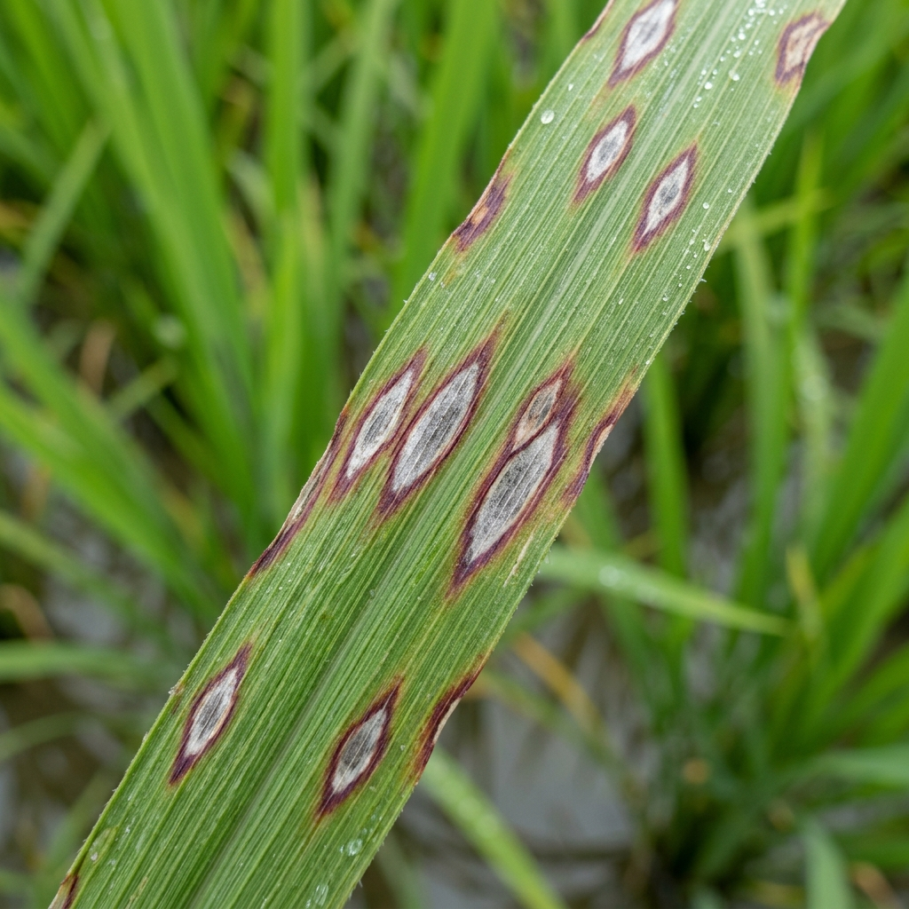
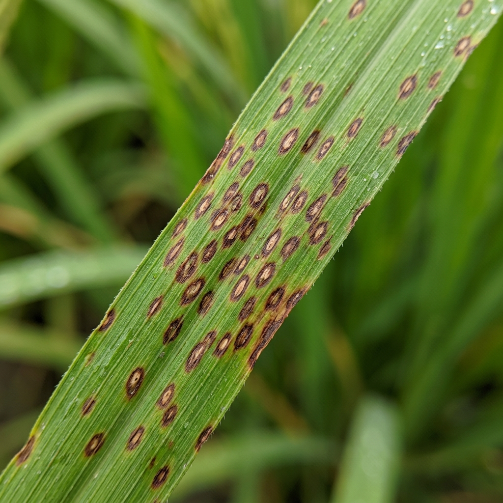
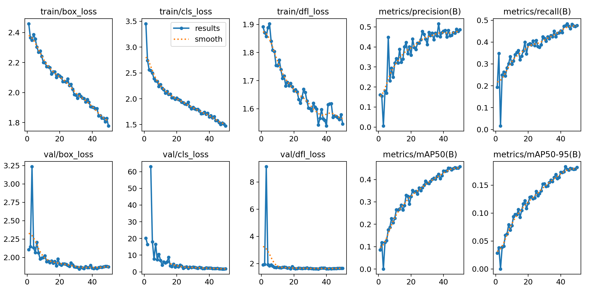
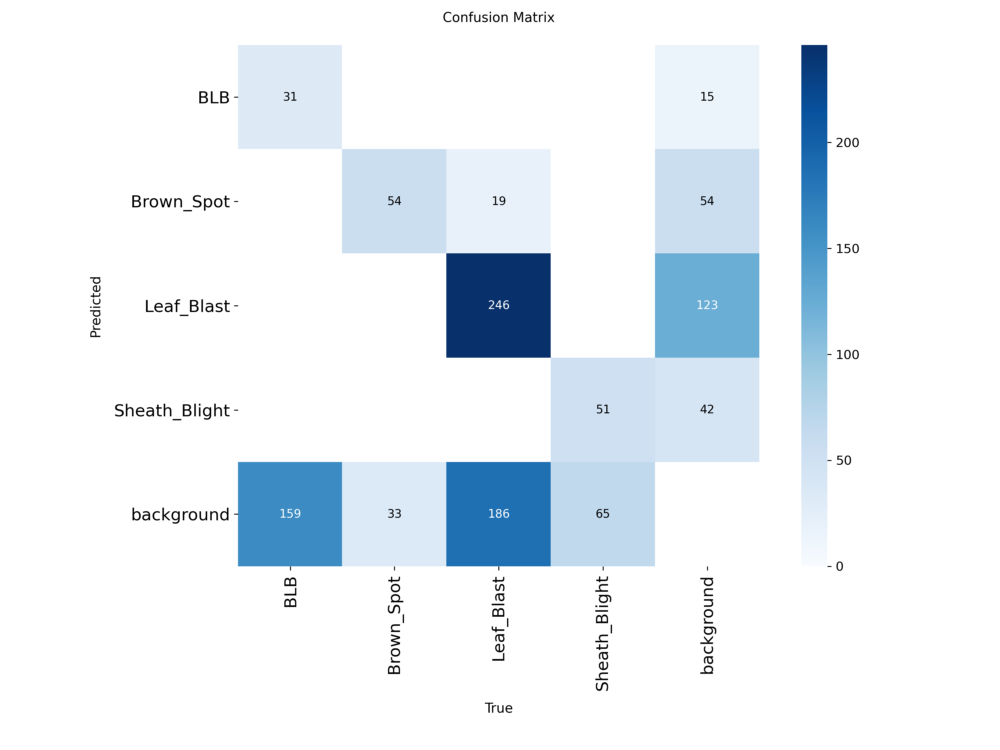
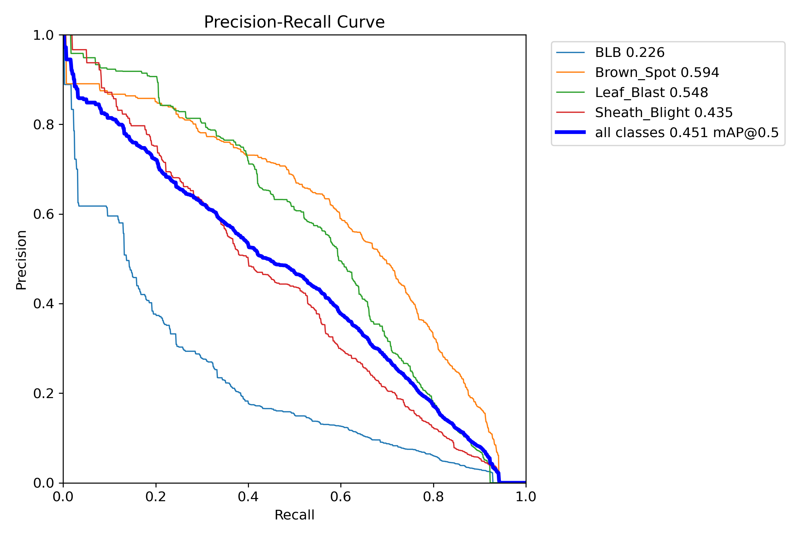
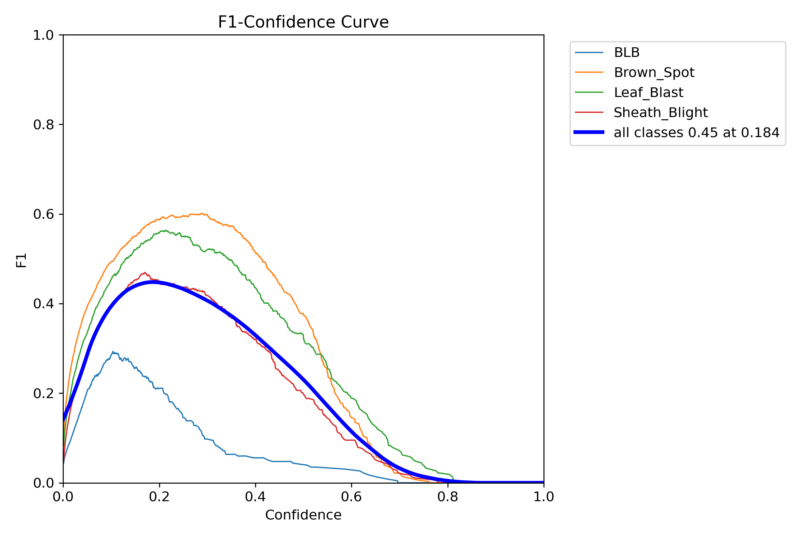

Kéo thả hoặc chọn ảnh
Chụp ảnh lá lúa từ điện thoại hoặc máy tính
| # | Tên bệnh | Triệu chứng nhận biết | Biện pháp xử lý | Mức độ |
|---|---|---|---|---|
| 0 | Đạo Ôn (Leaf Blast) | Vết nâu hình thoi, viền nâu đỏ, tâm xám nhạt | Tricyclazole, Isoprothiolane. Thoát nước ruộng 3-5 ngày | ● Cao |
| 1 | Bạc Lá (BLB) | Rìa lá vàng, khô dọc mép, mép gợn sóng màu xám | Thuốc gốc đồng, bón kali cân đối, tránh thừa đạm | ● Cao |
| 2 | Khô Vằn (Sheath Blight) | Mảng xanh xám loang lổ như vân mây ở bẹ sát gốc | Validamycin, Hexaconazole. Tỉa cây thưa để thoáng gió | ● Trung bình |
| 3 | Đốm Nâu (Brown Spot) | Đốm nhỏ hình tròn/bầu dục nâu rải rác phủ kín lá | Bón thêm phân kali, phun Mancozeb hoặc Propiconazole | ● Trung bình |
| 4 | Lá Khỏe (Healthy) | Lá xanh đều, không vết bệnh, thẳng đứng quang hợp tốt | Chăm bón theo quy trình hiện tại, kiểm tra định kỳ | ● Khỏe |
| ID | Tên bệnh | Confidence | Thời gian | Hành động |
|---|---|---|---|---|
| Chưa có dữ liệu. Thực hiện chẩn đoán trước. | ||||

Đạo Ôn
● Nguy cơ caoLeaf Blast (Magnaporthe oryzae)
Bệnh do nấm gây ra, xuất hiện các vết hình thoi đặc trưng trên lá, bẹ lá có tâm xám nhạt và viền đỏ nâu. Trong điều kiện độ ẩm cao, bệnh phát tán nhanh gây thối cổ bông và sập lúa cục bộ.
Bạc Lá
● Nguy cơ caoBacterial Leaf Blight (Xanthomonas oryzae)
Gây ra bởi vi khuẩn thâm nhập qua vết thương lá. Triệu chứng là mép lá cháy vàng từ chóp lá lan xuống dưới dọc theo hai rìa lá, vết cháy uốn lượn lọng sóng màu trắng xám.
Khô Vằn
● Trung bìnhSheath Blight (Rhizoctonia solani)
Bệnh nấm phát triển mạnh từ các bẹ lá sát gốc bông, tạo ra các vết loang lổ giống như vân mây màu xanh xám, trắng xanh. Bệnh làm tắc nghẽn quá trình chuyển hóa dinh dưỡng gây đổ ngã.

Đốm Nâu
● Trung bìnhBrown Spot (Bipolaris oryzae)
Thường xuất hiện nhiều nhất ở các vùng đất chua nghèo dinh dưỡng. Vết bệnh là các hạt đốm màu nâu nhỏ tròn hoặc bầu dục phủ khắp mặt lá, làm giảm đáng kể năng lực quang hợp.
Lá Khỏe Mạnh
● Khỏe mạnhHealthy Leaf
Lá xanh thẳng đều, không bị đốm hại hay cháy khô. Cây có sức khỏe tốt, quá trình quang hợp tích năng lượng chất lượng cao, hứa hẹn đem lại sản lượng mùa màng bội thu.
Sơ đồ luồng xử lý dữ liệu (Inference Pipeline)
Cơ chế Chú ý BiFormer (Bi-level Routing Attention)
Trong việc chẩn đoán bệnh lá lúa, các đốm bệnh thường rất nhỏ và mật độ không đều, làm cho các cơ chế chú ý toàn cục truyền thống (Global Self-Attention) tốn kém tài nguyên tính toán không cần thiết và dễ bị nhiễu bởi nền đất/lá khỏe.
BiFormer sử dụng cơ chế định tuyến mức khối (Bi-level Routing Attention - BRA). Hệ thống trước tiên lọc và định tuyến các vùng truy vấn (queries) đến các khối chứa chìa khóa/giá trị (keys/values) có liên quan nhất. Từ đó chỉ tính toán sự chú ý cục bộ và chọn lọc, giúp loại bỏ nhiễu nền, tăng tốc độ xử lý và cải thiện cực lớn độ nhạy với các đốm bệnh mờ nhạt.
Đầu phát hiện 4 tầng (4-scale Detection Head)
Mô hình YOLO chuẩn thường chỉ thực hiện phát hiện vật thể ở 3 mức phân giải đặc trưng ($8\times$, $16\times$, $32\times$ downsampling - tương đương đầu P3, P4, P5). Tuy nhiên các vết bệnh lúc mới phát triển (như đốm kim châm của bệnh đạo ôn hoặc đốm nâu mới nảy mầm) thường chỉ rộng vài pixel.
Bằng việc bổ sung tầng phân giải thứ tư P2 ($4\times$ downsampling), mạng nơ-ron giữ lại lượng lớn đặc trưng không gian có độ phân giải cao. Nhờ đó, mô hình có khả năng định vị chính xác cao độ và khoanh vùng các vết bệnh cực kỳ nhỏ lẻ, hỗ trợ chẩn đoán và phun phòng ngừa từ rất sớm.
YOLOv11s-50e
Mô hình YOLOv11sMô hình YOLOv11s cơ bản được huấn luyện qua 50 epochs. Đạt độ cân bằng tối ưu giữa độ chính xác và tốc độ suy luận xử lý thời gian thực.
BiFormer-P4-40e
BiFormer + P2/P4 HeadTích hợp cơ chế Attention phân chia động (Bi-level Routing Attention) ở Neck và đầu phát hiện 4 tầng (scale P2). Độ chính xác cực cao (Precision 50.6%) giúp phát hiện đốm bệnh nhỏ tốt hơn và giảm chẩn đoán nhầm.
Đồ thị huấn luyện chi tiết
Chọn mô hình để xem biểu đồ kết quả, ma trận nhầm lẫn và các đường cong hiệu năng tương ứng.
Đường cong Loss & mAP (results.png)

Thể hiện sự giảm dần của hao hụt hộp (box_loss), mất mát lớp (cls_loss) và dfl_loss trên tập Train/Val qua 50 epochs, song song với việc tăng trưởng ổn định của độ đo mAP50.
Ma trận nhầm lẫn chuẩn hóa (confusion_matrix.png)

Đo lường chi tiết sự phân loại đúng đắn của từng lớp bệnh. Giúp đánh giá tỷ lệ nhầm lẫn giữa các đốm bệnh tương đồng nhau như đốm nâu và đạo ôn lá.
Đường cong Precision-Recall (BoxPR_curve.png)

Đường cong cân bằng giữa độ chính xác dự đoán (Precision) và tỷ lệ tìm thấy vết bệnh thực tế (Recall) tại các ngưỡng confidence khác nhau của từng lớp bệnh.
Đường cong F1-Score theo Confidence (BoxF1_curve.png)

Đồ thị F1-Score giúp xác định điểm tin cậy (Confidence Threshold) tối ưu nhất để lấy quyết định chẩn đoán (thường đạt cực đại ở mức conf quanh 0.25 - 0.35).